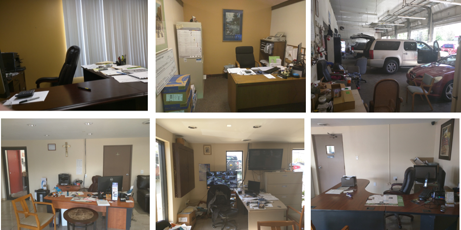
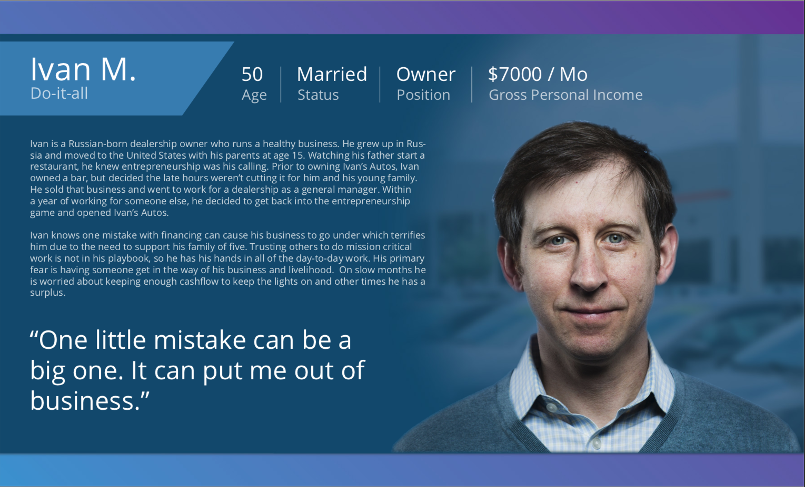
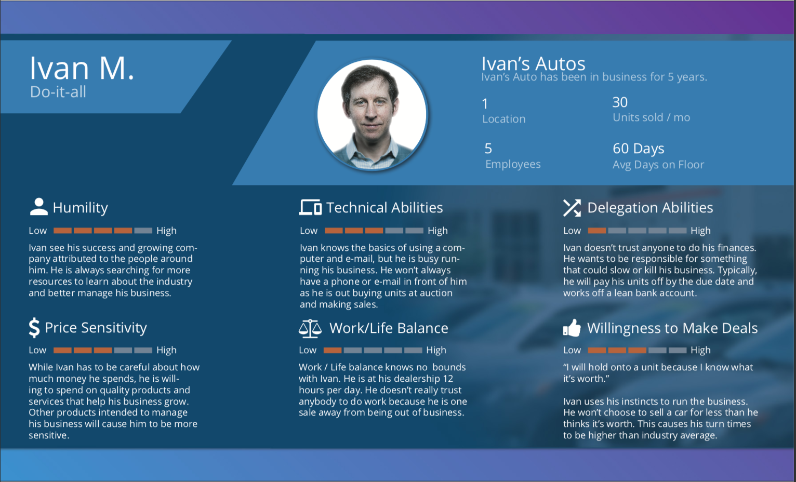
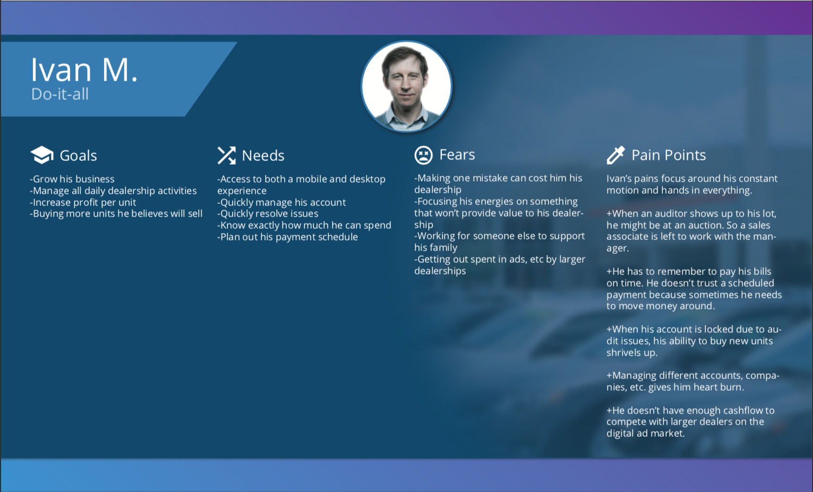

Study Design
Within the study, we leveraged the account managers at NextGear. As a part of the study, I built relationships with the account managers who coordinated 28 different dealers across four cities. Within this study we discussed daily processes, pain points, and other activities within the automotive dealer setting. One thing we noted was the constant changing of contexts. Dealers might have been at the dealership, on the road, or at an auction.

Persona Designs
Each persona is made up of three pages to describe who they are. These pages help the technology team to empathize with our user base, have better conversations, and ultimately build better products.

The first page of each persona is general information. It helps us understand who this person is and what their story entails. I chose vivid imagery to bring a feeling like the persona was looking directly at the reader, creating a more human connection.

The second page helps the reader understand some of the abilities our users have. The character traits ultimately drive how a user will interact with different technologies / services.

The third page represents fears, goals, and needs of the persona. This helped our teams determine if a solution concept works with our user or if it is a bit clunky. This page adds the human touch - helping the reader to better identify with the emotions of the users.
Outcomes
At the end of the day we had high adoption rates among development and product teams. Many times when discussing features our persona's names would come up in conversation.
Surprisingly, we drew a lot of interest from the Marketing and Customer Service departments. At the end of the day, our goal was to bring more empathy and reference to the end users of the system.